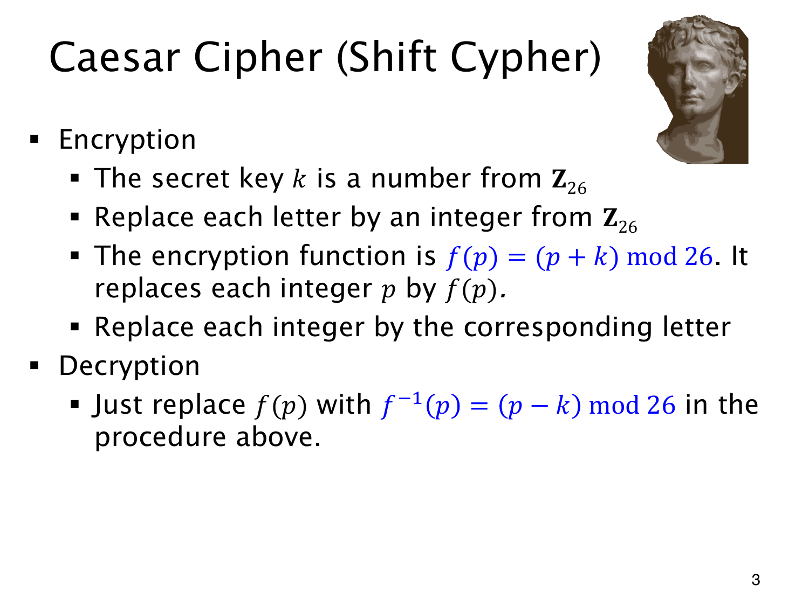

L1.14 · 第 3 页讲解原文
查看这一页课件

Caesar 密码把字母循环平移
取密钥 k=3，A 平移成 D；Z 则越过字母表末尾，绕回 C。算术上先编码 A=0,B=1,…,Z=25，于是 25+3=28，模 26 得 2。
对明文字母编码 p，加密函数是
f(p)=(p+k)mod26,k∈Z26.
将结果换回字母即可。收到密文编码 c 后，反向平移：
f−1(c)=(c−k)mod26.
加 k 再减 k，结果与 p 同余，而 p 已在标准范围，所以恢复原字母。原页给逆函数也用了变量名 p，实际输入应理解为密文编码。
这里使用加法逆元，任意 k 都可撤销平移，不要求它与 26 互素。k=0 也合法，但不会改变消息。整个密钥空间只有 26 种，因此能正确解密并不等于难以破解。